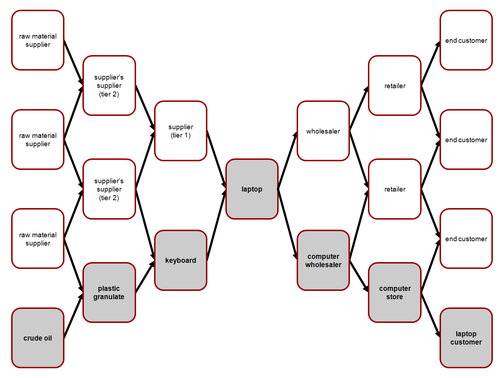
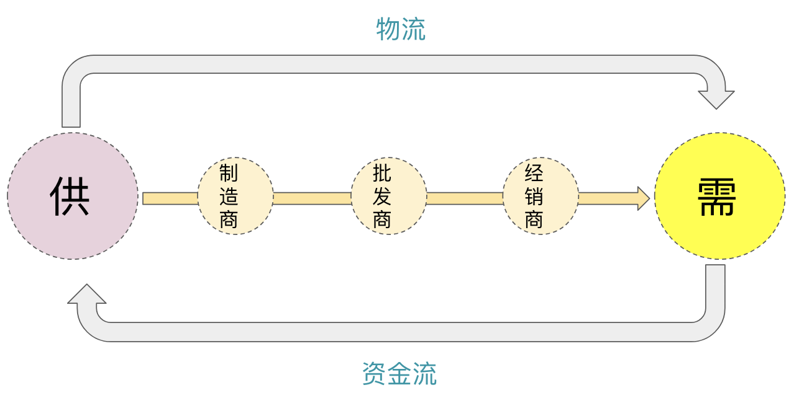

- 00 开篇词 帮你从0到1深入学习区块链技术.md.html
- 尾声篇 授人以鱼，不如授人以渔.md.html
- 新书首发《区块链第一课：深入浅出技术与应用》.md.html
- 第01讲 到底什么才是区块链？.md.html
- 第02讲 区块链到底是怎么运行的？.md.html
- 第03讲 浅说区块链共识机制.md.html
- 第04讲 区块链的应用类型.md.html
- 第05讲 如何理解数字货币？它与区块链又是什么样的关系？.md.html
- 第06讲 理解区块链之前，先上手体验一把数字货币.md.html
- 第07讲 区块链的常见误区.md.html
- 第08讲 最主流区块链项目有哪些？.md.html
- 第09讲 深入区块链技术（一）：技术基础.md.html
- 第10讲 深入区块链技术（二）：P2P网络.md.html
- 第11讲 深入区块链技术（三）：共识算法与分布式一致性算法.md.html
- 第12讲 深入区块链技术（四）：PoW共识.md.html
- 第13讲 深入区块链技术（五）：PoS共识机制.md.html
- 第14讲 深入区块链技术（六）：DPoS共识机制.md.html
- 第15讲 深入区块链技术（七）：哈希与加密算法.md.html
- 第16讲 深入区块链技术（八）： UTXO与普通账户模型.md.html
- 第17讲 去中心化与区块链交易性能.md.html
- 第18讲 智能合约与以太坊.md.html
- 第19讲 上手搭建一条自己的智能合约.md.html
- 第20讲 区块链项目详解：比特股BTS.md.html
- 第21讲 引人瞩目的区块链项目：EOS、IOTA、Cardano.md.html
- 第22讲 国内区块链项目技术一览.md.html
- 第23讲 联盟链和它的困境.md.html
- 第24讲 比特币专题（一）历史与货币.md.html
- 第25讲 比特币专题（二）：扩容之争、IFO与链上治理.md.html
- 第26讲 数字货币和数字资产.md.html
- 第27讲 弄懂数字货币交易平台（一）.md.html
- 第28讲 弄懂数字货币交易平台（二）.md.html
- 第29讲 互联网身份与区块链数字身份.md.html
- 第30讲 区块链即服务BaaS.md.html
- 第31讲 数字货币钱包服务.md.html
- 第32讲 区块链与供应链（一）.md.html
- 第33讲 区块链与供应链（二）.md.html
- 第34讲 从业区块链需要了解什么？.md.html
- 第35讲 搭建你的迷你区块链（设计篇 ）.md.html
- 第36讲 搭建你的迷你区块链（实践篇）.md.html
- 捐赠
第32讲 区块链与供应链（一）
前面的文章里，我们聊了很多与区块链数字资产、数字金融相关的内容，它们都属于基础设施。今天，我们来聊聊另外一个话题：区块链与供应链。
供应链是一个非常大的话题，几乎在任何的实业里都会有供应链的身影。对于企业来说，如何做好供应链管理，似乎是一个万年不变的难题。
而对于一个行业来说，如何站在行业全局的角度提供出供应链的最佳配置策略，也是一个万年不变的难题。
所以当供应链遇到区块链，区块链的一些优秀特性刚好可以解决目前供应链领域的痛点。
什么是供应链
在聊区块链和供应链之前，我先简单地向你介绍一下什么是供应链。供应链虽然也带了一个“链”字，它其实是一个网链状的结构。
下图展示了笔记本电脑供应链的各个环节。

（图片来自维基百科）
图片中展示笔记本电脑的生产制造过程，左侧表示了制造一个笔记本电脑的原料供给侧，Laptop的右侧表示为需求侧，包含了批发商（wholesaler）、经销商（retailer)等多个角色，它们都是围绕了笔记本电脑而形成的供应链。
通过上面的图，我们来归纳一下到底什么是供应链？供应链围绕核心企业与产品构建，是一个从供应商开始、途径制造商、运输商、分销商最终到消费者的网链状结构。
我们可以发现供应链是一个网链状的复杂结构，每个角色又与其他角色互相交叉，于是可见它的管理也是非常复杂的。
供应链领域
供应链领域又分供应链管理和供应链金融，我们先从供应链管理开始。
1.供应链管理
供应链管理就是指对整个供应链系统进行计划、协调、操作、控制和优化的各种活动和过程，其目标是使这一过程所耗费的总成本最小。需要注意的是：这里的总成本是指整个供应链参与的企业总成本最小，不是指单个环节的成本最小。
我们已经知道了，供应链涉及了供应商、制造商、渠道商等角色。那么连接这些角色的，主要是采购（Purchasing）、库存（Inventory）、物流（Logistics）等一系列事务。采购、库存和物流主要围绕仓储、配送中心、物流运输展开，所以我们也可以把供应链看作是由供应商、制造商、渠道商、仓库、配送中心、物流运输等构成的网络。
在这个网络之中，各个角色之间最大的问题就是信任问题，因为只有建立信任才能协作完成一个完整的产品制造和销售过程。供应链管理面对的首要问题就是如何降低信任成本，将原本松散的企业形成互信的链式结构，每个角色必须通过有效的链上管理来协调自身和外部的资源，从而满足市场需求。
在这个链式结构中，有信息流、物流、资金流三种流动过程。
- 信息流：是指每个角色需要了解并追踪产品在供应链中的当前位置和状态；
- 物流：是指产品或原材料被转移到目标角色手中的过程；
- 资金流：是指上下游资金结算的过程。

上述图片展示了在供应链管理过程中，物流指向需求侧，资金流指向供应侧，信息流则需要在各个角色之间共享。
而目前供应链的现状是，资金流、信息流、物流各自独立运行，资金流靠银行，信息流靠供应链管理工具，物流靠运输行业，它们都是围绕一个或多个核心企业展开的，所以各个角色极度依赖核心企业，这种模式暴露了以下几个问题：
- 核心企业对上下游的延伸和掌控范围有限；
- 上下游可能因为竞争关系，存在信息流作假和被篡改的风险。
- 市场供需变化无法及时传导到供给侧，从市场需求到供给侧的风险依次放大。
这些问题一方面会增加核心企业的供应链管理的复杂度，另一方面是非核心企业参与感不强导致的风险忽视。虽然市场上也出现了一系列工具来帮助提升供应链上下游协同能力，但是还是存在了一些问题。
- 在整个供应链过程中，存在多个不同的参与方。由于不同参与者可能使用不同的数据库甚至是纸质文档，因此，数据的跨系统整合较难。
- 传统数据库体系中的数据本身存在被篡改、被攻击的风险。在准确性和安全性上还存在较大的提升空间。
- 由于产品的追踪难度大，一旦某个环节出现问题，监管机构对于不合规的活动在调查、取证及问责上存在一定的难度。
换句话说，只要中心化的思路不变，只是形式变换了，传统技术仍然难以有效地解决问题。但是区块链的信息透明共享、节点之间对等、不可篡改等各种特性，几乎就是针对供应链的对症下药，所以区块链也被誉为供应链管理的终极武器。
2.供应链金融
供应链金融和供应链是两个概念，因为多了金融两个字，于是严格来说，供应链金融属于金融的范畴，它是专门为供应链服务的金融。
供应链金融(supply chain finance, SCF)可以泛指各种融资工具，它可用于为供应链中的各方提供资金，通过短期信贷手段来平衡上下游之间的流动资金差，从而最大限度地减少总供应链成本，企业也可以利用供应链融资与供应商建立更牢固的关系，降低金融风险和提高流动性。
与其他金融一样，供应链金融的核心也是风险管理，良好的风险管理前提是供应链信息真实可靠的透明共享。传统供应链金融围绕银行展开，银行在供应链信息上的收集也受制于传统技术，并不能完全掌握企业之间的真实订单情况，那么风险控制则十分依赖对企业的信誉判断了。
所以，如果所有的参与方都可以真实准确地查阅整个供应链的流程和状态，那么风险管理就变成了整个供应链参与方共同分担，而不仅仅只是核心企业和银行。
区块链为供应链带来的新曙光
区块链为供应链主要带来了思维上的变革，不再是以围绕核心企业打造的生态，而是共治的生态，区块链作为基础设施可以为参与方提供良好的可信环境，从而降低供应链的成本。
通过上文我们知道，供应链有三流：物流、信息流、资金流。理想的情况其实是“三流合一”，也就是由区块链本身提供信息流、资金流、物流三流管理。
这里如何理解呢？
- 区块链本身也可以提供信息登记，例如订单状态可以被格式化成区块链的交易附加内容。
- 区块链应用到资金流，这个想必你也应该猜到了数字资产，其实物品被登记后也属于一种有价凭证，对有价凭证的验证和交付可以看成数字资产的另外一种形式。
- 区块链应用到物流，这里或许要结合IoT技术一起完成，因为区块链作为分布式系统，无法直接感知物流状态，例如运输途中食品的温度，这个是需要依赖传感器的，传感器获得的数据可以上传到区块链，也可以通过哈希处理后登记到区块链。
实际上，现阶段在供应链商达到“三流合一”是十分困难的，但我认为这是一种趋势，这取决于区块链的发展速度。
所以区块链在供应链中的切入点往往是从物流切入的，因为物流是连接各方最直观的表现，也是关系最紧密的。从物流切入可以避免与现有供应链工具的直接竞争，例如既存的供应链管理工具已经提供了信息流管理，银行提供了资金流管理，所以从物流入手项目落地的可能性最大。
在物流上，区块链可以保证数据登记真实可信，信息对所有参与方公开透明，并且提供产品溯源功能，这似乎就已经发挥了很大的功用，解决了一些难题。
说到这里你可能觉得奇怪，国内“四通一达”效率之高几乎吊打全世界，为什么还说物流有很多问题呢？其实国内的环境比较特殊，“四通一达”的创始人之间有比较好的信任基础，而且国内电商的和互联网技术的崛起，也为国内物流环境创造了良好的土壤。
所以这里主要针对的是跨境物流环境，跨境物流面临的痛点还涉及了海关、跨境汇率、目的地国家政策等多方面的影响，相互之间的信任程度更低，所以解决跨境物流是区块链在供应链上的一个突破点。
区块链应用到供应链上也有很多著名案例，比如业界经常提到的几个案例：
- 马士基（Maersk）和IBM的海运保险区块链平台案例；
- 沃尔玛利用区块链进行食品追踪溯源案例；
- 众安的区块链养鸡场实时记录和追溯整个鸡的成长过程案例；
- 海航科技基于区块链技术的物流端到端的虚实融合信息流平台。
实际上，通过仔细分析我们可以发现，以上机构使用的是DLT技术，也就是联盟链，并非公链。下一篇我们通过技术视角来详细剖析一下这个现象。
总结
好了，今天我主要介绍了什么是供应链，供应链的现状以及面临的难题，最好又聊到了区块链又可以为供应链带来什么，应该从哪里切入。今天的问题是，你觉得供应链还有什么难题是区块链可以解决的呢？你可以给我留言，我们一起讨论。
© 2019 - 2023 Liangliang Lee. Powered by gin and hexo-theme-book.